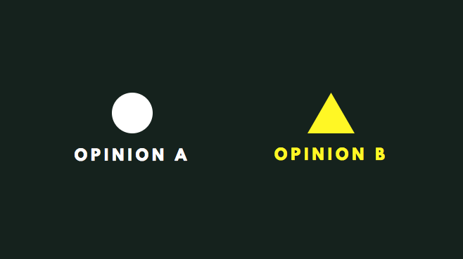

Avocading big ideas, one model at a time.
You are about to experience the contextualised version of this active essay.
Have you gone through the basics?
Yes No
About Us
This project is an active essay that was built for the UIT2207 Computational Thinking and Modelling taught by Professor Kahn. This project aims to help children understand and learn the concept of spiral of silence and the applications of it in a real world context through computer models.
This is a story about how remaining silent can cause the world to become a meaner place. To start, let's try understanding the concept behind this story called The Spiral of Silence.
The two inhabitants of this world have different opinions.
We are social creatures, aren't we? This is why we want to integrate with the majority
Try moving the lonely circles to the other side!
But...wait! Did you notice that the circles did not become triangles?
Initially, we still hold on to our original opinion. However, as time passes, we are exposed to the majority opinion and less of our original opinion. We then start to actually conform to the majority opinion.
Toggle the "Present" button to see how opinions can change over time.
So far, we’ve seen that the circles want to integrate with the triangles, as they are the perceived majority.
In other words, the triangles are thought to be the majority.
The following model looks just like the one we have seen before - the triangles seem to be the majority opinion. This is the perceived majority opinion.
Try clicking on the “perceived” button to see what the actual majority is.
That’s right - the circles are the majority! This is known as the actual majority.
Sometimes, the perceived majority is not the same as the actual majority, like in this case.
Even though the circles are the actual majority opinion, they still think that the triangles are the majority opinion.
And as we have already learnt, the circles will try to fit in with what they think is the majority opinion.
Move the circles to the integration side and toggle the “present” button to see what happens when the circles try to fit in with the perceived majority.
Just because everybody else thinks that triangles are the majority opinion,
and chooses not to make their own opinions known for fear of being isolated,
the triangles are propagated and the circles are lost.
This phenomenon can be summarised into a simple theory:
"More frightened of isolation than of committing an error, they joined the masses even though they did not agree with them."
In other words, when Bill has an opinion that is different from the majority opinion, he chooses not to speak up and instead conforms with the majority.
When everybody thinks like Bill, everybody chooses not to speak up about their own opinion, resulting in a Spiral of Silence.
However, you can choose to speak up!
Don't underestimate the power of the voice of an individual - even if others have a different opinion, you can voice out your opinion and try to convince them.
Try moving the circle closer to the triangle and make it speak up!
(Be patient though, convincing others takes time!)
Now let's try influencing more triangles. Don't worry, the triangles you have already influenced will help you influence others too! Hint: After influencing one group, you can move to a different group
Just by choosing to speak up, it is possible for you, as an individual, to reverse the Spiral of Silence!
Now, let’s take a look at a few other factors in this reversal.
Congratulations! You've just learnt a new theory!
Now that you've mastered the basics of Spiral of Silence, let's take a different look at this theory.
On the issue of
bullying
Although many people would not agree that bullying is okay, studies have shown that 1 in 5 children have experienced bullying before.
Why is this happening, and why is nobody speaking up against bullying?
Some people think that bullying is okay. Others disapprove of it.
Let's move to the scenario.
Did you notice how even though the actual majority opinion is that bullying is bad, people still perceive that the majority opinion is that bullying is okay,
and so do not speak up and instead try to conform?
As a result, more and more people think that bullying is okay. This is how a Spiral of Silence can spread.
How can we reverse the Spiral of Silence here?
Earlier, we learnt about charisma and resistance.
Try toggling the various events in the model below to see what differences they can make to the Spiral of Silence.